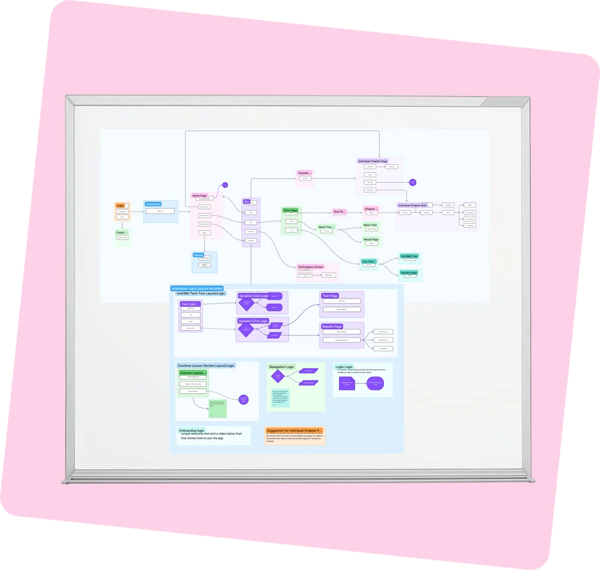
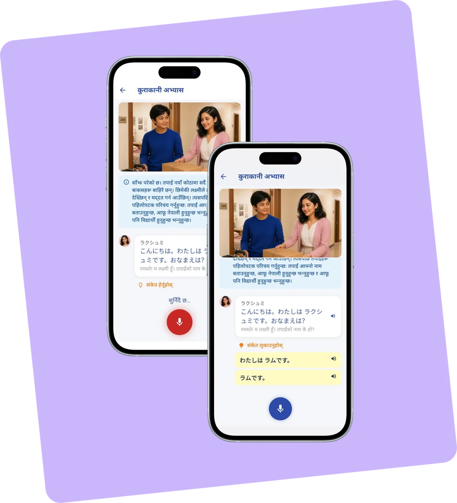
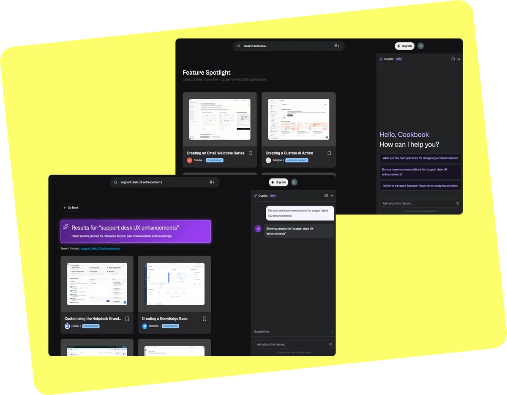
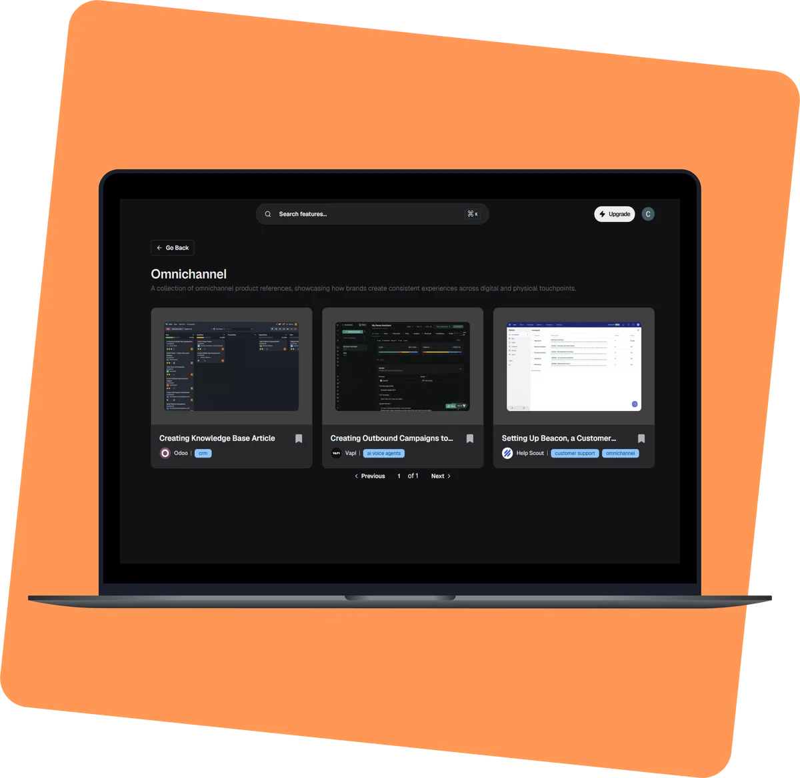
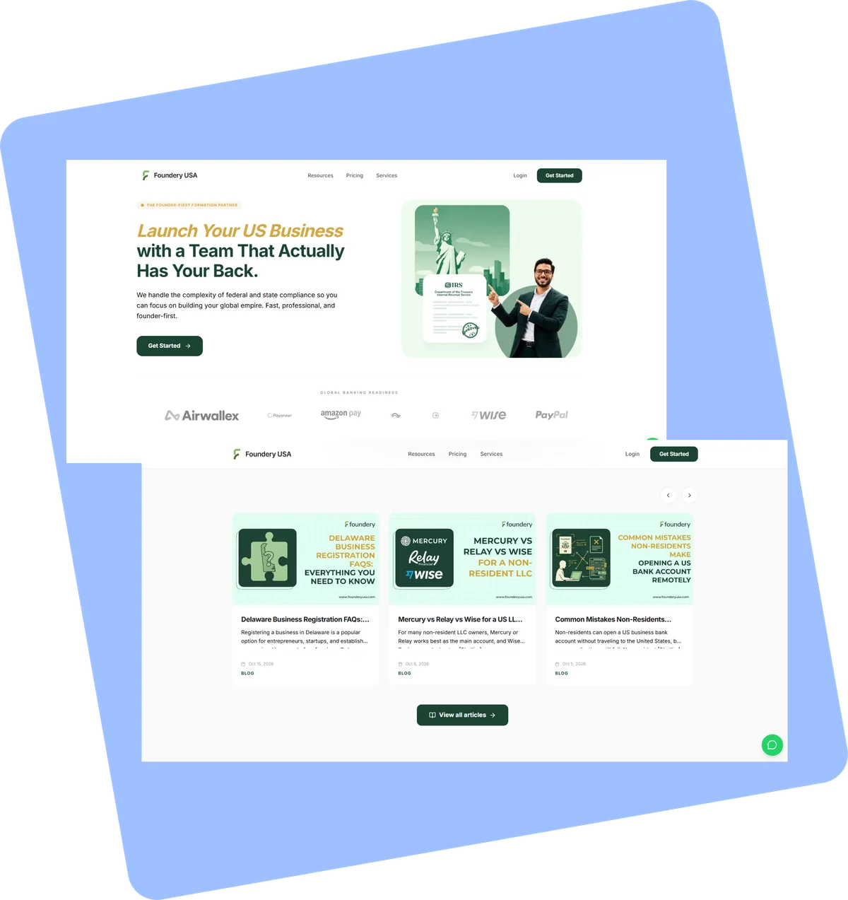

Nihongo Nepal: Turning JLPT Prep from a Textbook into a Guide
Reading time: ~5 min (1,124 words)
Read case studyWork

Reading time: ~5 min (1,124 words)
Read case study
Reading time: ~4 min (889 words)
Read case study
Reading time: ~4 min (1,005 words)
Read case study
Reading time: ~3 min (622 words)
Read case study
Reading time: ~5 min (1,086 words)
Read case studyIn progress
Check back soon.
A little about me
I have a background in Computing and a growing interest in human-computer interaction, product design and the way people interact with technology.
I enjoy understanding the problem behind a product, exploring how people use it and translating those insights into clear, intuitive experiences.
My approach to design goes beyond how an interface looks. I think about the people using it, the problems they are trying to solve and how each interaction contributes to the overall experience.
I currently work as an Associate UI/UX Designer, where I continue to develop my skills in user-centred design and digital product development.
I’m always interested in learning, exploring new ideas and creating products that make a meaningful difference to people’s everyday experiences.
From computing to designing experiences.
Started exploring different areas of technology, software development and digital products.
Worked on collaborative software projects, taking part in planning, development and design. Began exploring user interface design and prototyping.
Worked on projects involving user flows, wireframes, Figma prototypes and usability testing. Also took on Scrum Master responsibilities in academic teams.
Find out moreCompleted my undergraduate degree and continued developing my interest in UI/UX and product design.
Completed a six-week UI/UX internship, gaining practical exposure to design workflows and collaboration.
Currently working as an Associate UI/UX Designer, continuing to develop my experience in interface design, user experience and digital products.
I’m always open to conversations, collaborations and opportunities to learn and contribute.
Email: LinkedIn: View profile